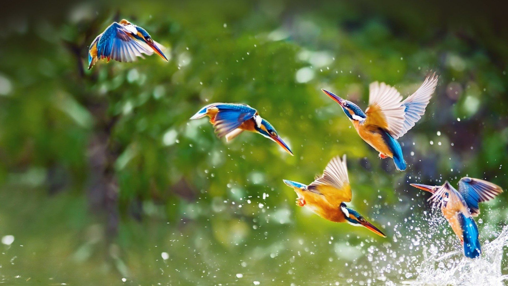
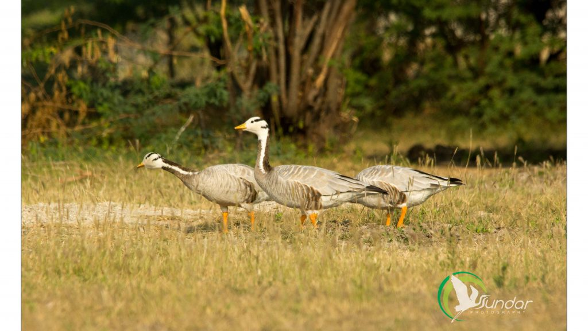
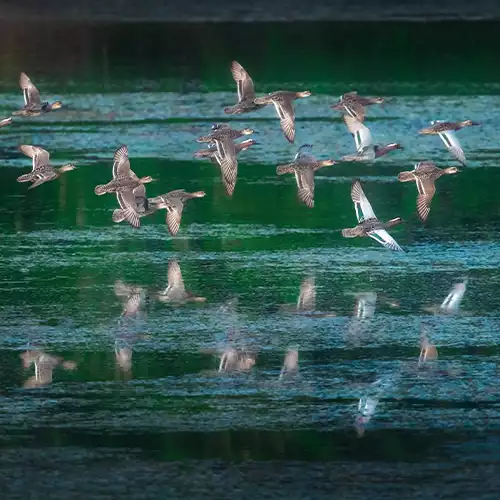
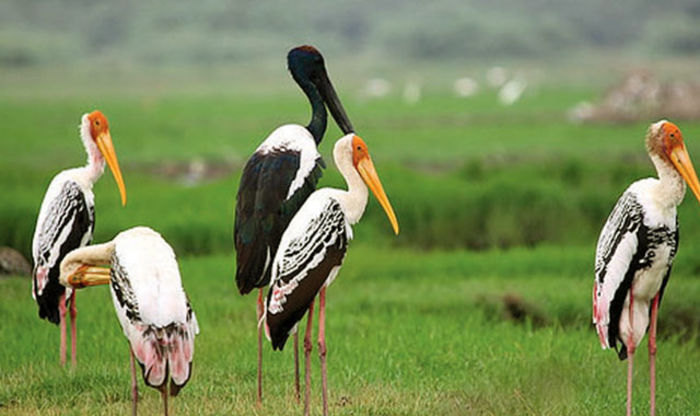
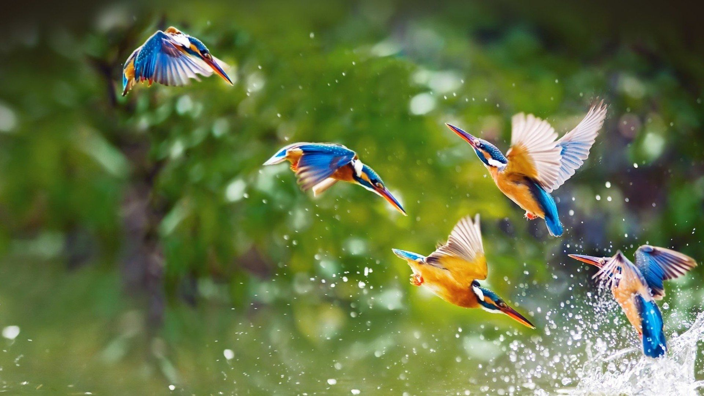
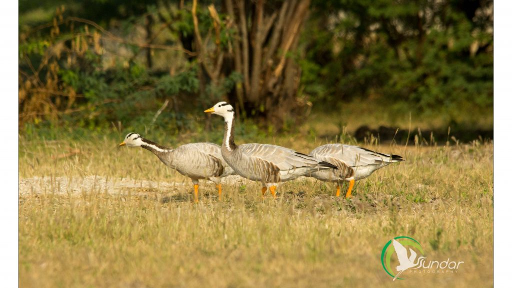
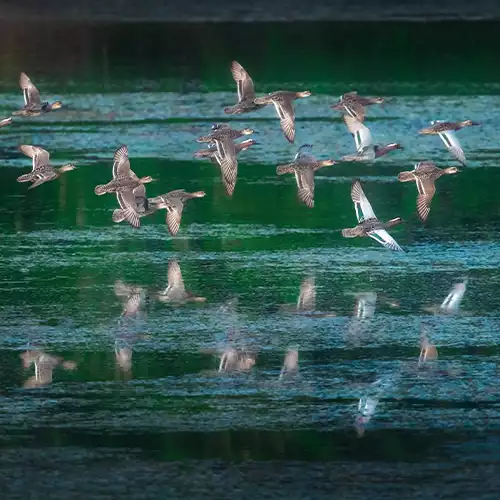
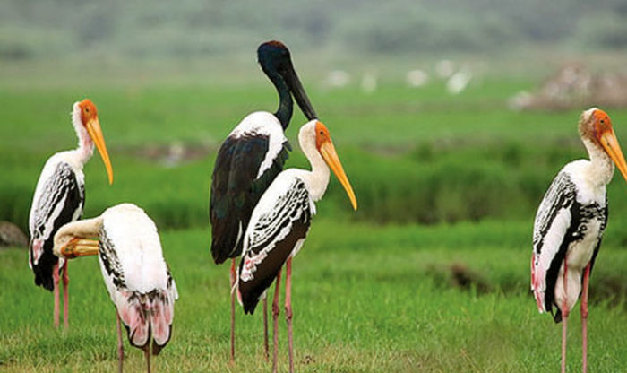

General Information
The Karaivetti Bird Sanctuary is a 4.537-square-kilometre (1.752 sq mi) protected area located in the Ariyalur District of the state of Tamil Nadu, India. The sanctuary is about 25 kilometres (16 mi) from Thanjavur. This freshwater lake is fed by Pullambadi, Kattalal canal and attracts thousands of birds every year. This lake was declared as a sanctuary in 1999 by the Government of Tamil Nadu. About 200 birds are species recorded from this sanctuary. Karaivetti Bird Sanctuary is one of the Important Bird Areas (IBA's) of Tamil Nadu.
Karaivetti Bird Sanctuary is home to migratory birds such as Bar-headed goose, Northern pintail, White Stork, Northern shoveler, Garganey, Blue-winged teal, Osprey and common sandpiper.
History
In the 19th century, the rulers of Indian princely states used to invite the British colonists for hunting expeditions. At the end of the 19th century, only about a dozen Asiatic lions were left in India, all of them in the Gir Forest, which was part of the Nawab of Junagarh's private hunting grounds. British viceroys brought the drastic decline of the lion population in Gir to the attention of the Nawab of Junagadh, who established the sanctuary. Today, it is the only area in Asia where Asiatic lions occur and is considered one of the most important protected areas in Asia because of its biodiversity. The Gir ecosystem with its diverse flora and fauna is protected as a result of the efforts of the government forest department, wildlife activists and NGOs. It is now considered the jewel of Gujarat's ecological resources.
Geography
The sanctuary is a large irrigation tank located in the northern alluvial plains of the Kaveri river. It is fed during the northeast monsoons by the Pullambadi canal. It is also referred to together with another nearby tank and called Vettakudi-Karaivetti Bird Sanctuary. Farm lands especially paddy, sugarcane, cotton, castor and maize are surrounded by this lake and irrigated from this lake. Acacia nilotica planted inside the lake is serving as a major nesting site for birds.
During winter, the total number of birds recorded is between 20,000 and 60,000, mostly Anatida. Globally threatened species such as Greater Spotted Eagle, Oriental Darter, Black-headed ibis and Spot-billed Pelican were reported in this site Karaivetti is one of the important active heronries in Tamil Nadu. Spot-billed Pelican, Black-headed ibis, Painted Stork, Oriental Darter, Eurasian Spoonbill are some of the birds species breeding in this sanctuary. Other fauna inhabit this region are Golden Jackal, Black-naped hare, Indian grey mongoose and nearly 15 species of fish were reported Karaivetti Bird Sanctuary attracts birdwatchers mainly during the winter season. Interpretation centre explaining the importance of the wetland and waterfowl of this sanctuary was established and opened for public in 2015.
 






